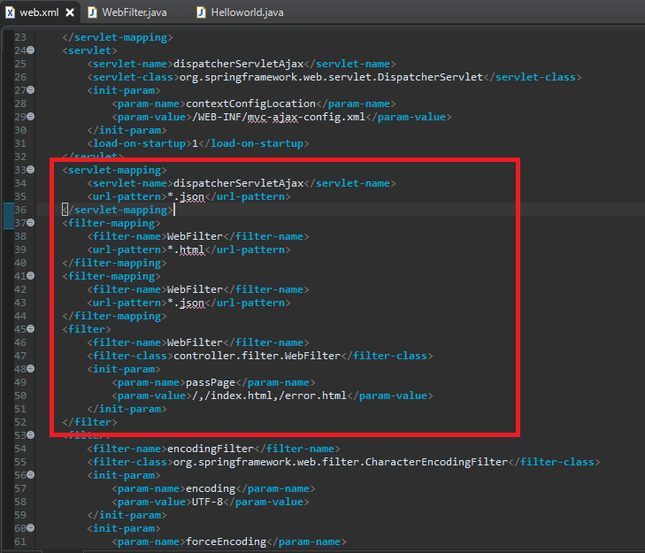
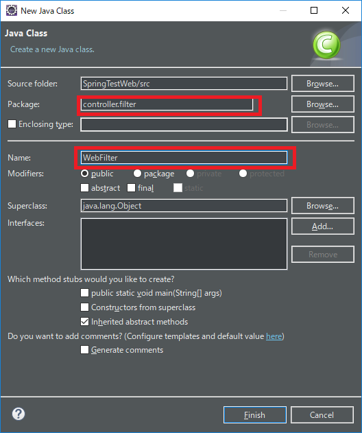
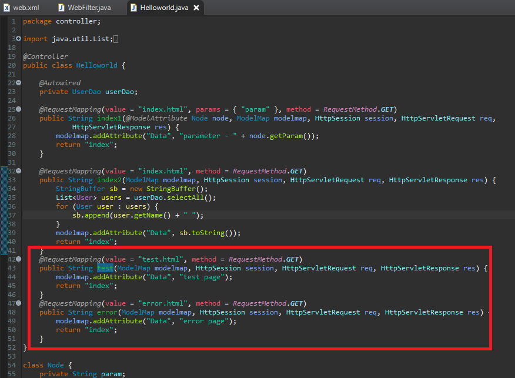
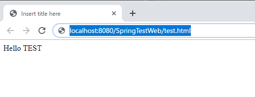
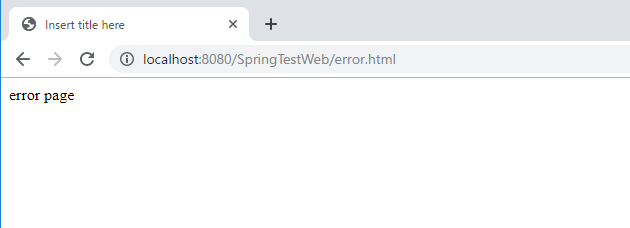

[Java] Web Spring frameworkでfilter設定
こんにちは。明月です。
ウェブサービスを立ち上がる時にセッションや認証のため、グローバル設定しなければならない時があります。
例えば、ログイン可否やユーザ権限(permission)確認などですね。
その時にそれぞれのページにログインやユーザ情報を呼出す関数を関数開始するところで実装してもよいですが、もっとプログラムらしく設定するほうがフィルターの機能です。
フィルターは「web.xml」でどのクラスを呼出すかを設定します。
<!-- html拡張名が呼び出される場合 -->
<filter-mapping>
<filter-name>WebFilter</filter-name>
<url-pattern>*.html</url-pattern>
</filter-mapping>
<!-- ajax拡張名が呼び出される場合 -->
<filter-mapping>
<filter-name>WebFilter</filter-name>
<url-pattern>*.ajax</url-pattern>
</filter-mapping>
<!-- auth拡張名が呼び出される場合 -->
<filter-mapping>
<filter-name>WebFilter</filter-name>
<url-pattern>*.auth</url-pattern>
</filter-mapping>
<!-- フィルタークラス設定 -->
<filter>
<filter-name>WebFilter</filter-name>
<filter-class>controller.filter.WebFilter</filter-class>
<init-param>
<param-name>passPage</param-name>
<param-value>/,/index.html,error.html</param-value>
</init-param>
</filter>

説明すれば「filter-mapping」タグで「filter-name」はどのフィルターを使うかを設定することで、「url-pattern」の場合はどのURLパータンで呼出すかを設定するところです。
もちろん「*」で全体設定も可能ですが、その場合は「js」ファイルや「css」、イメージファイルまでフィルターを通ることになります。必要なら全てのコンテンツにフィルターをかけることが良いですがその場合はパーフォーマンスを考えるとしないほうが良いと思いますね。
「filter」タグは「filter-name」を設定して「filter-mapping」タグに連携するような「filter」名を決めて「filter-class」の場合はどの「filter」クラスを呼出すかを設定します。
「init-param」は「filter」クラス中で使うパラメタ値になります。私の場合は特定なURLを除くように設定します。
そうすると「filter」クラスを生成しましょう。「web.xml」では「controller.filter.WebFilter」クラスを設定しましたので「package」は「controller.filter」で設定して、クラス名は「WebFilter」で設定してクラスを生成しましょう。

package controller.filter;
import java.io.IOException;
import java.util.ArrayList;
import java.util.List;
import javax.servlet.Filter;
import javax.servlet.FilterChain;
import javax.servlet.FilterConfig;
import javax.servlet.ServletException;
import javax.servlet.ServletRequest;
import javax.servlet.ServletResponse;
import javax.servlet.http.HttpServletRequest;
import javax.servlet.http.HttpServletResponse;
import javax.servlet.http.HttpSession;
public class WebFilter implements Filter {
private List<String> passUrl = null;
private String contextPath;
@Override
public void destroy() {
// TODO Auto-generated method stub
}
@Override
public void init(FilterConfig filterConfig) throws ServletException {
// TODO Auto-generated method stub
// ウェブページのrootのURLを取得する。
contextPath = filterConfig.getServletContext().getContextPath();
passUrl = new ArrayList<String>();
// web.xmlで設定したパラメタを設定する。
String[] ignoredPaths = filterConfig.getInitParameter("passPage").split(",");
for (String ignoredPath : ignoredPaths) {
passUrl.add(contextPath + ignoredPath);
}
}
@Override
public void doFilter(ServletRequest request, ServletResponse response, FilterChain chain)
throws IOException, ServletException {
HttpServletRequest req = (HttpServletRequest) request;
HttpServletResponse res = (HttpServletResponse) response;
HttpSession session = req.getSession();
//Userセッション値があれば通過
if (session.getAttribute("USER") != null) {
chain.doFilter(req, res);
return;
}
// web.xmlで設定したパラメタのURLなら通過
String url = req.getRequestURI();
for (String buf : passUrl) {
if (buf.equals(url)) {
chain.doFilter(req, res);
return;
}
}
// ユーザセッションもなくて(ログアウト状況)設定されたURLではなければエラーページにredirectする。
res.setStatus(403);
res.sendRedirect(contextPath + "/error.html");
}
}
フィルタクラスはFilterインタフェースを継承します。
そうするとFilterインタフェースは３つのメソッドが宣言していますね。(destory, init, doFilter)
「destory」メソッドは別に気にしなくてもいいです。「init」の場合はクラスがインスタンスが生成する時に呼び出せるメソッドです。コンストラクタと似ているかな。
私の場合は「web.xml」で設定したフィルタで除くページを設定します。
そしてブラウザから要請されるとコントローラを呼出す前にFilterクラスの「doFilter」が呼び出せます。
上のソースの場合はコントローラでログインしたと思うとそのログインクラスをセッションに格納します。
もし、そのセッションが「null」ではない状況、ログイン状態といえば「chain.doFilter」を呼出してコントローラに移動します。
でも、セッションが「null」の状況、つまりログインではない状況なら「web.xml」で設定したチェックしない「URL」かをチェックしてそのこともなければエラーコードを「403」を発生して「error.html」ページにredirectします。
もし、「web.xml」で「error.html」を設定しなければセッションがない状況をチェックしてクラ返してフィルタをチェックするので無限ループに落ちます。
後、Springコントローラには「test.html」と「error.html」のパターンを作成しましょう。

上のソースを見れば私は「web.xml」で「index.html」と「error.html」の場合は通過するように設定しました。
ただ、「index.html」で接続すると問題なく、表示されます。

でも、「test.html」で打つと「error.html」ページに遷移されますね。

添付 -  SpringTestWeb.zip
SpringTestWeb.zip
- [Java] Java servletでインスタンスを初期する方法2019/10/17 07:15:48
- [Java] Spring web frameworkで発生する文字化けのEncoding設定2019/10/16 07:32:55
- [Java] Web Spring frameworkでfilter設定2019/10/15 20:12:35
- [Java] Web serviceのweb.xmlでエラーページ設定2019/10/14 20:13:44
- [Java] JPAのDAOをFactoryパターンで管理する方法2019/10/13 22:55:52
- [Java] JPAのSpring frameworkで依存性注入する方法2019/10/13 00:40:08
- [Java] JPAでDAOを生成する方法2019/10/11 07:30:14
- [Java] JPAでトランザクションの使用方法とオブサーバーパターンで共通トランザクション関数を作り方2019/10/10 07:29:43
- [Java] JPAのQuery を作り方2019/10/09 07:34:08
- [Java] JPAのEntityクラス設定(Cascade, fetch)2019/10/08 07:43:33
- [Java] JPAでpersistance.xml設定とentityクラス設定(@GeneratedValue設定)2019/10/07 07:38:13
- [Java] EclipseでJPAフレームワーク設定する方法2019/10/04 19:24:43
- [Java] Web spring frameworkのJSPで使う言語 JSTL - XML2019/10/03 20:02:06
- [Java] Web spring frameworkのJSPで使う言語 JSTL - 関数、データベース2019/10/02 21:00:22
- [Java] Web spring frameworkのJSPで使う言語 JSTL - コアー、フォーマッティング2019/10/01 21:48:08
- [Python] 05. コンプリヘンション(Comprehension)を使用する方法2020/06/01 19:38:58
- [Python] 04. 制御文(if, while, for, break, continue)とインデント2020/05/29 21:09:08
- [Python] 03. Pythonでリスト(list)とタプル(tuple)、そしてディクショナリ(dictionary)、セット(set)2020/05/27 18:49:08
- [Python] 02. データタイプ、変数宣言そしてコメントする方法2020/05/26 18:16:52
- [Python] 01. Python3をインストールする方法(Anacondaインストール)2020/05/25 19:02:44
- [Java] HttpConnectionを利用してウェブページを取得する方法2020/05/20 23:53:24
- [Java] Jsoupを利用してXMLファイル(HTML)を扱う方法2020/05/19 19:32:21
- [C#] 非同期ソケット通信(IOCP)-APMパターン2020/05/18 18:45:37
- [C#] 非同期ソケット通信(IOCP)-EAPパターン2020/05/15 19:31:02
- [C#] ソケット(Socket)通信をする方法2020/05/13 17:37:13
- [C#] NPOIを利用してExcelを読み込んで出力する方法2020/05/08 10:43:52
- [C#] NPOIライブラリを利用してエクセルファイルを生成する方法2020/05/07 01:49:01
- [C#] Geckoライブラリを利用してウェブスクレイピングする方法2020/05/05 00:52:26
- [C#] PDFを作成する方法(iTextSharp)2020/05/03 10:22:40
- [C#] シリアライズ(Serialization)をする方法2020/04/30 19:32:04